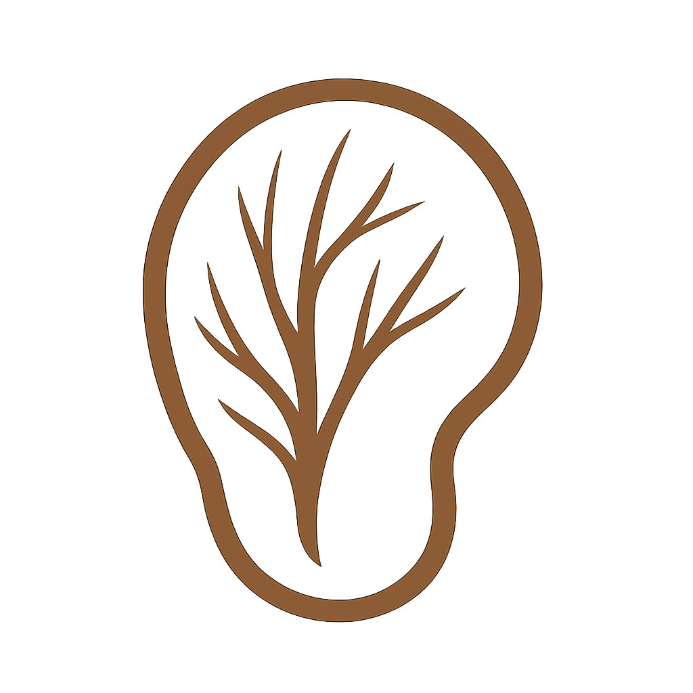
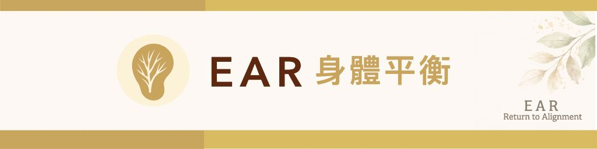
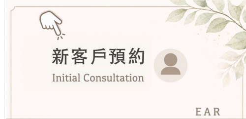
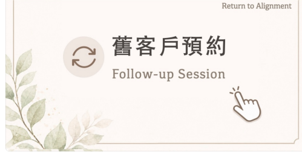

EAR聆芯身體平衡
關於我
服務項目
自我照護好物
常見問答
立即預約
EAR聆芯身體平衡
關於我
服務項目
自我照護好物
常見問答
立即預約
返回首頁
Return to Alignment

請問您是⋯？
請點選下方圖片，進入對應的預約頁面


重新選擇
①
基本資料
新客
您的姓名
*
電子郵件
*
聯絡電話
*
LINE 名稱
*
生理性別
*
請選擇
男
女
生日
*
②
服務項目
選擇服務項目
*
請先選擇服務項目
徒手/放鬆
嬋柔(Gyrokinesis)
③
預約時間選擇
正在同步 Google 行事曆狀態⋯
④
服務地點選擇
請選擇地點
中和據點｜親友限定
板橋館｜棒地物理治療所
善導寺館｜透視物理治療所
小巨蛋館｜連邦物理治療所
國父紀念館｜心動動作工作室
到府服務｜限雙北地區
服務環境說明：凡需爬坡或無電梯設備之場域，請務必私訊告知，感謝您的配合。
※ 若與前次服務地址相同，您可直接填寫「同前次」。
*
⑤
目前的身體狀況
精準評估您的身體狀況，請條列目前欲改善的主要訴求：(複選)
位置
急性期: 小於 1 週
亞急性期: 1 ～ 4 週
慢性期: 1 ～ 6 個月
長期痼疾: 6 個月...
⑥
如何得知我們的資訊 (複選)
*
親友同儕 / 個案介紹
專題演講 / 課程活動
專業轉介 / 教練推薦
Instagram: polarbear_physio
YouTube: 尤慧群物理治療師
賽事場邊 / 現場防護
其他:
確認送出預約
預約成功！
我們已經保留您的預約時段，確認信已寄至您的 Email，請留意查收。
預約姓名
服務項目
預約時間
服務地點
返回首頁